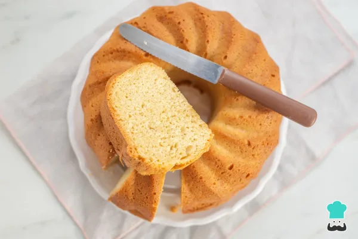

RECETA TORTA CLÁSICA DE VAINILLA
Si estás pensando en preparar una torta por primera vez, la clásica torta de vainilla es la elección perfecta. Es una receta básica, ideal para principiantes, y muy versátil: puedes dejarla simple o personalizarla con sabores, rellenos y decoraciones a tu gusto. Su preparación es sencilla y el resultado, una torta casera suave, esponjosa y deliciosa, ideal para servir como postre, merienda o en cualquier ocasión especial. No necesitas ser un experto en repostería para lograr un buen resultado: con la técnica adecuada, podrás sorprender a tus invitados con algo rico, hecho con tus propias manos.

Ingredientes
- 500 gramos de mantequilla
- 1 kilogramo de azúcar
- 1 kilogramo de harina preparada
- 8 huevos
- 1 litro de leche
- 1 cucharadita de vainilla
- 1 cucharadita de ron o whisky
- 1 taza de ralladura de limón
Elaboración paso a paso
- El primer paso para saber cómo hacer una torta casera es comenzar con la mantequilla y el azúcar. Mezcla ambas y bátelas hasta conseguir una crema color blanquecino.
- Añade los huevos y mezcla, también agrega la harina y vuelve a mezclar. Por último, integra la leche hasta obtener una mezcla homogénea. Agrega los toques de vainilla, ron o whisky y la ralladura de limón. Si prefieres no usar licor, no hay problema. Puedes descartarlo de la mayoría de las recetas de tortas fáciles.
El sabor predominante de esta torta casera debe ser la vainilla, pero puedes modificarlo al gusto por cualquier otra esencia. La ralladura de naranja también le queda muy bien a este bizcocho esponjoso.
- En un molde previamente untado de mantequilla, coloca la mezcla y llévala al horno durante 40 minutos a 180 ºC. También puedes usar un molde de silicona o el típico molde para queques que es de forma rectangular.
- Para terminar la torta clásica de vainilla solo te queda retirarla del horno y esperar a que enfríe a temperatura ambiente para desmoldarla. ¡Este bizcocho casero podrás disfrutarlo así solo, sin más!
La forma correcta de mezclar estos ingredientes es con la mantequilla blanda y, para obtenerla debes sacar la mantequilla de la nevera al menos una media hora antes de la preparación para asegurar que esté a temperatura ambiente.